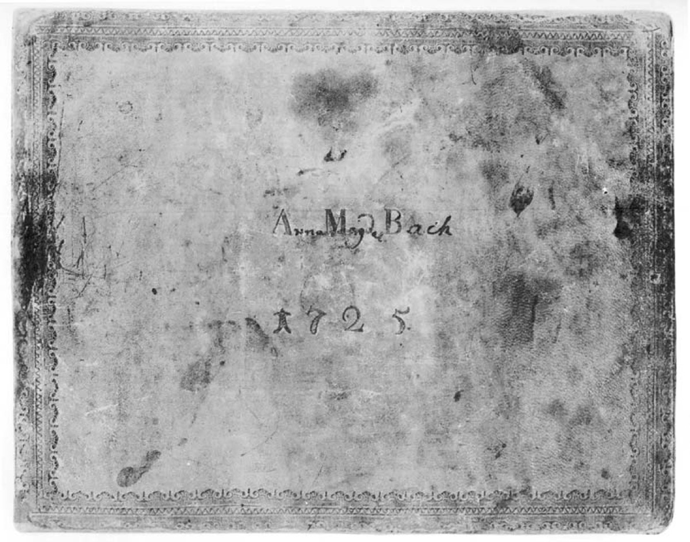

The household in the school: family as workshop, and its costs

Begin with the floor plan. The cantor's apartment in the Thomasschule, expanded during the renovation of 1723, put Bach's composing study directly against the boarders' quarters — imagine, for a moment, the ambient noise of a dormitory of schoolboys, and then imagine the Passions being written on the other side of the wall. It is the right image for the whole household, because what lived in that apartment was never merely a family. It was an enterprise, and the census of it reads like the manifest of a small institution: the four surviving children of Maria Barbara; the growing brood of Anna Magdalena; private pupils, some of them boarding; visiting relatives arriving on the old clan's business; the copying workshop that turned each week's score into Sunday's performing parts; and one of the great private music libraries in Germany, whose range Bach's estate inventory would later prove.
The workshop deserves to be seen as what it was: infrastructure. The cantata machine ran on a weekly deadline that no professional copying house served; it was the household that served it — wife, elder sons, students, bent over the tables extracting parts against Sunday. Unpaid skilled labor, living quality control, rehearsal support: the family track of this timeline is not a sidebar to the works track in Leipzig. It is how the works track was physically possible. When the outer cards say a masterwork a week, this apartment is where the week happened.
And then the cost, which the family track states without ornament because ornament would be indecent. In Leipzig, Anna Magdalena bore thirteen children over some nineteen years — and buried seven of them, most in infancy, several in these very years when the cantata machine ran at full production. Set the two records side by side, because the era's hardest fact lives in the juxtaposition: while the performing materials show a new masterwork nearly every Sunday, the parish registers show, again and again, a small coffin carried from the Thomasschule. Biography rightly resists drawing causal lines between a composer's griefs and his works, and this card draws none. But no one should study the Leipzig funeral music — Ich habe genug above all — ignorant of the address it came from, or of how often death visited that address wearing a child's face.
The one extended personal account we have of the household is Bach's own, in the 1730 letter to his friend Erdmann, and its tone is exactly what the floor plan predicts: a businessman's sentences with a father's pride at the center. The children, he reports, are "born musicians." And then the single boast in all his surviving correspondence: he could already form a concert, vocal and instrumental, within his own family — his wife, he adds, "sings a fine soprano." Not a hobby; a capacity statement. The man was describing his firm, and the firm was his family, and the two facts had never in his life been separable — he had been raised inside exactly such a household himself, and now presided over the largest one the clan had ever produced.
So hold the apartment in mind as the invisible setting of every Leipzig card: births and burials, pupils and relatives, the library shelves, the copying tables, the study against the dormitory wall. The music that fills this timeline came out of those rooms — carried out of them, quite literally, in parts still wet with the household's ink — and the price of it was paid in those rooms too, in a currency the works track never shows.
Continue with the era essay: Leipzig I: the cantata machine, or meet the woman at the enterprise's center: Anna Magdalena Bach.
Leipzig registers; Bach to Erdmann, 1730 (New Bach Reader)
Wolff, The Learned Musician, ch. 9
→ full bibliography & links